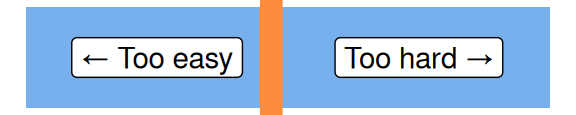

Excel tables
This session is part of our Excel for beginners course. That’s a series of six linked sessions, delivered on Teams, that give an introduction to Excel for people working in health and social care. The sessions are:
- Excel first steps
- Tidy data in Excel
- References and names in Excel
- Excel formatting
- Excel tables (this session)
- Excel formulas
Together, they aim to help you develop an appropriate set of Excel skills to help your work. This session covers tables in Excel:

- for this session, you’ll need to be familiar with the Excel basics (getting around in Excel, opening/saving/closing files, A1 referencing, and values)
- we’re going to dodge formatting and formulas as much as possible today
- you might find the list of Excel shortcuts helpful too
Previous attendees have said…
- 47 previous attendees have left feedback
- 98% would recommend this session to a colleague
- 91% said that this session was pitched correctly

- Thought it was very engaging
- good introduction
- Really useful, I have been using excel for many years and I am self taught so really good to get some nuggets that I may have missed along the way and I now understand how important tables are! Off to change all my excel sheets to tables :)
- all materials
- slides
html / pdf
Session outline
- introduction
- add and remove tables
- grow and shrink tables
- autofill and friends
- sort and filter
- names and reference
- pass data to other tools
Introduction
- this is an easy session to sum up: use tables in Excel
- most people don’t use Excel tables
- they’re probably the best Excel skill investment there is
- this is a practical session, so you’ll need some kind of Excel to follow along
A way of thinking about tables
- imagine you have several columns of data
- you can think of a table as a container for that data:
- like the lunchbox, putting data in a table helps keep your data tidy
- tables also protect your data, and make it easier to move from place to place
Some data
- tables are potentially useful throughout the life-cycle of an Excel file
- let’s start at the beginning:
- open Excel
- in a new worksheet, please enter today’s date
- DD/MM/YYYY format is best, but we’ll park that for the formatting session
Add a table
- make sure you have that date selected
- In the ribbon menu, go to
Insert>TableTable">- or you can use
Ctrl+t
- or you can use
- you’ll be asked to create a table - you should be able just to select
OK
A first table
- congratulations, you should now have a 1-cell table on your worksheet
- think about this as a container for your data
- you could call it a data structure instead if you wanted to be more fancy
Removing your table
- Tables aren’t formatting - so you can’t clear them like formatting
- Click inside your table, and you should see a new section of the ribbon menu -
DesignorTable Designdepending on your version - Select that
Table Designsection. The most useful parts are on the far left: - Select
Convert to Range- your table should now return to being an ordinary cell - Finally, please re-table your cell
Grow and shrink tables
Let’s add some new data:
- Please add three or four more dates, going back into last week, in the rows below your date
- Please add a word describing your main breakfast item in the next column
- Please add a third column, scoring that breakfast out of ten
Grow and shrink tables
- Now expand your table to include that new data. You can drag the blue handle or use the
Resize Tabletool in the ribbon menu . - You can use the same methods to shrink a table
Autofill and friends
- drag down to add two more empty rows
- select your three dates, and drag the green fill handle down into the empty cells
- this should populate the correct values - although you’ll need to check carefully that everything has worked
Filter and sort
Each of your column headers has a dropdown menu that will allow you to sort and filter your table
- sort allows you to order your table by that column
- filters shows and hides rows of the table
- you’ll have different filtering options for the different types of columns in your table
Names and reference
-
you can name each column. These work best as single descriptive words -
daterather thanbreakfast dateyou might find it helpful to write longer names in snake case (
breakfast_date) or camel case (breakfastDate)please now name your columns
-
you can also name the table as a whole. Again, that’s done from the left-hand side of the
Tablemenu- please give your table an appropriate name
Passing data demo
- Your table can now be saved, developed further, or passed to other data tools
- Tables have major advantages on this front:
- they’re portable, so you can move a table around
- you can use structured referencing - like
=data[score]- to select an entire column by name, which helps make Excel more robust- see the intermediate Excel session on referencing
- you can send the data easily and safely to PivotTables, PowerQuery, PowerPivot, and other fancier data tools